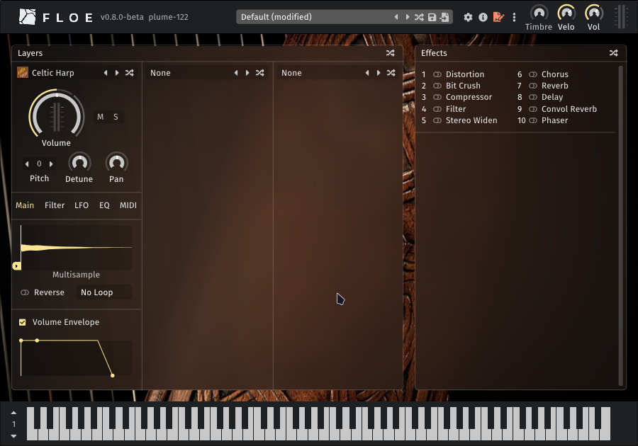
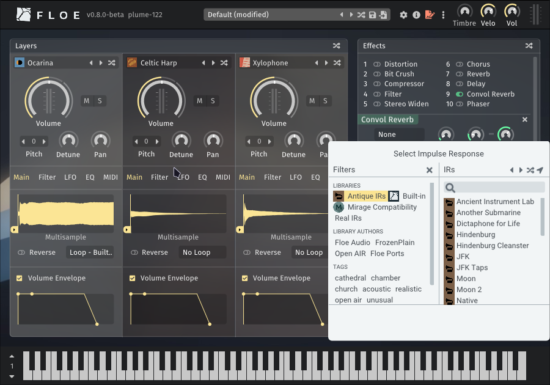
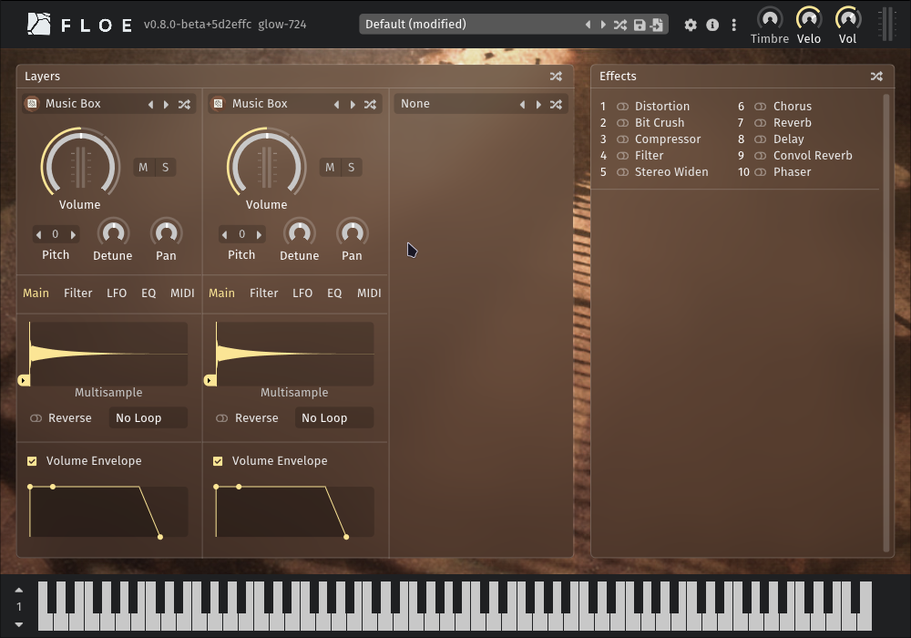

Available Packages
Floe can install libraries and presets from ZIP files called Floe packages.
This page showcases packages to help you get started with Floe.
Floe Ports (free)
Floe Ports is the name we’ve given to the community project of converting high-quality libraries from other formats into Floe’s native format. Reach out if you want to help with this project, we’d love more presets for these libraries and more libraries converted.
For developers: Floe Ports libraries are available on Floe’s GitHub.
These are currently very basic.
They have just 1 instrument each and no presets.
| Name | Details | Download |
|---|---|---|
| Celtic Harp by Floe Ports  | High-quality multisampled harp with velocity layers and round robins. Port of Etherealwinds Harp 2: Community Edition by Versilian Studios. 1 instrument, CC-BY (attribution required) | Download Package (120.4 MB) |
Xylophone by Floe Ports | Basic free multisampled xylophone from FreePats, converted into a Floe library. 1 instrument, public domain | Download Package (2.6 MB) |
Ocarina by Floe Ports | Basic free ocarina from FreePats, converted into a Floe library. 1 instrument, public domain | Download Package (4.3 MB) |
| Antique IRs by Floe Ports  | Impulse responses simulating old audio equipment (dicta-phones, film reels, vintage vinyl, wax cylinders). Port of NoiseCollector’s library from public domain historical recordings. 27 impulse responses, public domain | Download Package (1.1 MB) |
FrozenPlain Libraries
Floe fully supports all libraries from FrozenPlain’s catalogue of professional sample libraries (except their Kontakt-format libraries).
| Name | Details | Download |
|---|---|---|
| Music Box Suite Free by FrozenPlain  | Free multisampled music box from FrozenPlain. 1 instrument, 9 presets | Visit webpage → |
Professional Library Catalogue by FrozenPlain | Range of professional sample libraries covering ambient, cinematic, and sound design. (Paid products). | Browse FrozenPlain Libraries → |
| Mirage Compatibility by FrozenPlain | Required compatibility package for using FrozenPlain’s Mirage libraries inside Floe. | Download Package (8.9 MB) |
If you have a Floe package that you would like to be listed here, please get in touch.